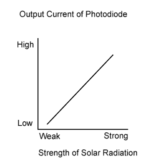
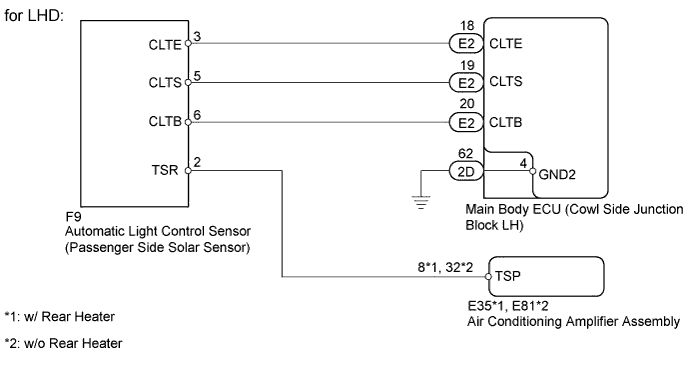
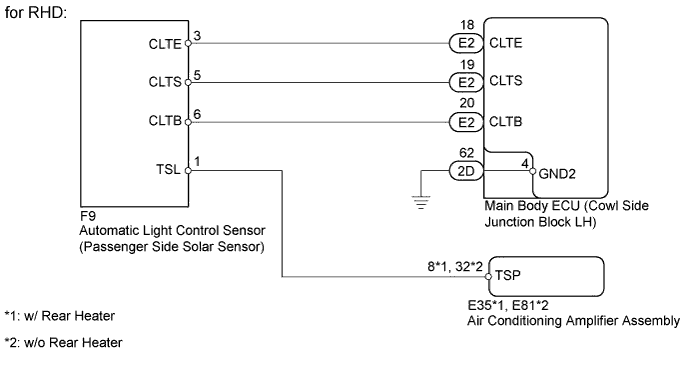
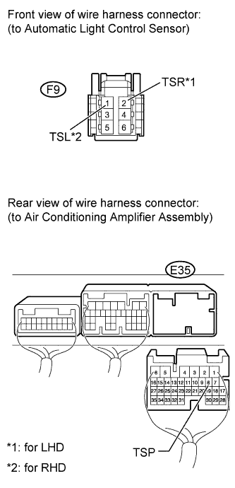
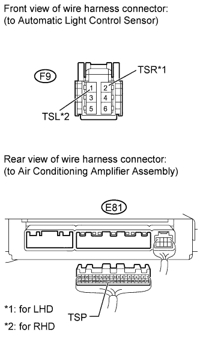
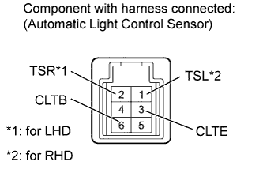
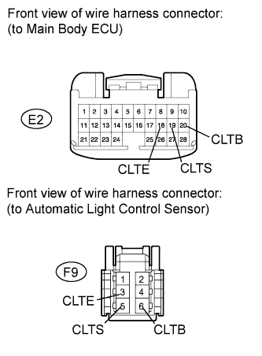

DTC B1421/21 Solar Sensor Circuit (Passenger Side) |

| DTC Code | DTC Detection Condition | Trouble Area |
| B1421/21 | An open or short in the passenger side solar sensor circuit. |
|


| 1.READ VALUE USING INTELLIGENT TESTER (PASSENGER SIDE SOLAR SENSOR) |
Use the Data List to check if the front passenger side solar sensor is functioning properly.
| Tester Display | Measurement Item/Range | Normal Condition | Diagnostic Note |
| Solar Sensor (P Side) | Passenger side solar sensor / Min.: 0, Max.: 255 | Passenger side solar sensor voltage increases as brightness increases | Open in the circuit: 0. Short in the circuit: 255. |
|
| ||||
| OK | ||
| ||
| 2.CHECK HARNESS AND CONNECTOR (AIR CONDITIONING AMPLIFIER - AUTOMATIC LIGHT CONTROL SENSOR) |
 |
w/ Rear Heater
Disconnect the F9 sensor connector.
Disconnect the E35 amplifier connector.
Measure the resistance according to the value(s) in the table below.
| Tester Connection | Condition | Specified Condition |
| E35-8 (TSP) - F9-2 (TSR)*1 | Always | Below 1 Ω |
| E35-8 (TSP) - F9-1 (TSL)*2 | Always | Below 1 Ω |
| E35-8 (TSP) - Body ground | Always | 10 kΩ or higher |
 |
w/o Rear Heater
Disconnect the F9 sensor connector.
Disconnect the E81 amplifier connector.
Measure the resistance according to the value(s) in the table below.
| Tester Connection | Condition | Specified Condition |
| E81-32 (TSP) - F9-2 (TSR)*1 | Always | Below 1 Ω |
| E81-32 (TSP) - F9-1 (TSL)*2 | Always | Below 1 Ω |
| E81-32 (TSP) - Body ground | Always | 10 kΩ or higher |
|
| ||||
| OK | |
| 3.INSPECT AUTOMATIC LIGHT CONTROL SENSOR (TSR, TSL - CLTE VOLTAGE) |
 |
Remove the automatic light control sensor (Click here).
Apply battery voltage between terminals 6 (CLTB) and 3 (CLTE) of the solar sensor.
Measure the voltage according to the value(s) in the table below.
| Tester Connection | Condition | Specified Condition |
| 2 (TSR) - 3 (CLTE)*1 | Sensor exposed to electric light | 0.8 to 4.3 V |
| Sensor covered with a cloth | Below 0.8 V | |
| 1 (TSL) - 3 (CLTE)*2 | Sensor exposed to electric light | 0.8 to 4.3 V |
| Sensor covered with a cloth | Below 0.8 V |
|
| ||||
| OK | |
| 4.CHECK HARNESS AND CONNECTOR (MAIN BODY ECU - AUTOMATIC LIGHT CONTROL SENSOR) |
 |
Disconnect the E2 ECU connector.
Disconnect the F9 sensor connector.
Measure the resistance according to the value(s) in the table below.
| Tester Connection | Condition | Specified Condition |
| E2-20 (CLTB) - F9-6 (CLTB) | Always | Below 1 Ω |
| E2-19 (CLTS) - F9-5 (CLTS) | ||
| E2-18 (CLTE) - F9-3 (CLTE) | ||
| E2-20 (CLTB) - Body ground | Always | 10 kΩ or higher |
| E2-19 (CLTS) - Body ground | ||
| E2-18 (CLTE) - Body ground |
|
| ||||
| OK | ||
| ||